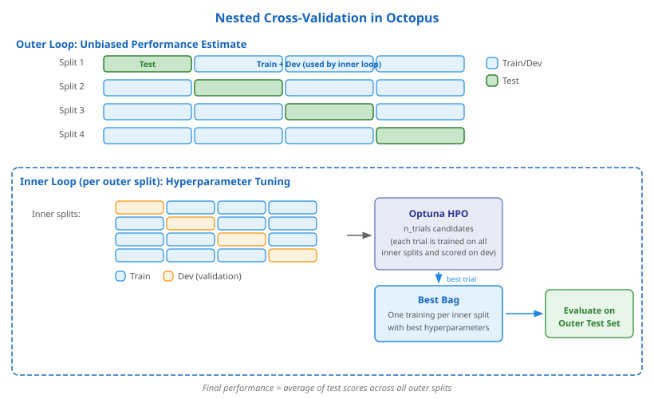

Nested Cross-Validation
Nested cross-validation is the central evaluation strategy in Octopus. It provides unbiased performance estimates even when hyperparameter tuning is involved, a property that matters most when data is scarce.
Why it matters
In a typical ML workflow you split data into training and validation sets, tune hyperparameters on the training set, and pick the configuration that scores best on the validation set. The problem is that the validation score now also reflects how well you searched the hyperparameter space. It is no longer an unbiased estimate of how the model will perform on truly unseen data.
For large datasets this optimistic bias is usually small. For small datasets (< 1 000 samples) the effect can be dramatic: with fewer data points each split is more sensitive to the exact partition, and the optimizer has a much easier time "memorizing" the validation set. Cawley & Talbot (2010) showed that this selection bias can be as large as the performance gain from tuning itself.
Nested cross-validation solves this by adding a second layer of splitting that cleanly separates hyperparameter tuning from performance estimation.
What is information leakage?
Information leakage occurs when data that would not be available at prediction time influences model training or evaluation. The result is an overly optimistic performance estimate that does not hold on truly new data. The selection bias described above is one form of leakage, but there are several others. Octopus is designed to prevent all of them.
Hyperparameter selection bias. When the same validation score is used both to select hyperparameters and to report performance, the reported number is too optimistic. Nested CV prevents this by evaluating on an outer test set that the inner tuning loop never touches (see How it works below).
Correlated observation leakage.
If your dataset contains multiple rows for the same subject (e.g. repeated
measurements from one patient), a naive random split can place some of a
subject's rows in the training set and others in the test set. The model then
"recognizes" the subject rather than learning generalizable patterns. Octopus
handles this automatically: it groups rows by sample_id_col and also detects
rows with identical feature vectors using a union-find algorithm. Entire groups
are kept together in the same split via GroupKFold / StratifiedGroupKFold.
See the classification and
regression user guides for how to set
sample_id_col.
Feature selection leakage. Selecting features on the full dataset (including test data) lets information about the test distribution influence which features are chosen. In Octopus all feature selection modules (ROC, MRMR, Boruta) run inside each outer split and only see the train+dev portion. The outer test set never influences which features are selected.
Preprocessing leakage. Computing imputation values or scaling statistics on the full dataset (including test data) subtly leaks test information into the training pipeline. In Octopus the preprocessing pipeline (imputation, scaling) is fit exclusively on the inner training partition. Dev and test partitions are transformed using those statistics, never contributing to them.
Runtime validation. As a final safeguard Octopus performs six runtime checks after every split: it verifies that no group appears in both train and test, that row indices do not overlap, that test splits cover all rows without duplication, and that no group is repeated across test partitions. Any violation raises an immediate error.
How it works
The idea is straightforward: wrap one cross-validation loop inside another.

Outer loop: performance estimation
The dataset is split into n_outer_splits splits (default: 5). In each
iteration one split is held out as the outer test set and the remaining
splits form the train+dev set. The outer test set is never used during
model training or hyperparameter tuning. It only serves as an unbiased
evaluation target.
After all outer splits have been processed the final reported performance is the average of the outer test scores. This average is an honest estimate of how the model generalizes.
Inner loop: hyperparameter tuning
Inside each outer split the train+dev set is further divided into
n_inner_splits splits (default: 5). One inner split becomes the dev set
(validation), the rest become the training set. Hyperparameter
optimization then runs entirely within these inner splits:
- Optuna proposes a set of candidate hyperparameters (a "trial").
- The trial is trained on every inner training split and evaluated on the corresponding dev split.
- The trial's score is the aggregated dev performance across inner splits.
- Optuna repeats for
n_trialsiterations, guided by its TPE sampler.
Because the outer test set is never touched during this process, the final outer test score remains unbiased.
From trials to predictions
After hyperparameter tuning completes:
- The best trial's hyperparameters are used to train a fresh set of models, one per inner split, forming a Bag.
- This Bag's predictions on the outer test set are computed by averaging the predictions of all its inner models (called Trainings).
- This process repeats for every outer split.
When making predictions on new data all outer Bags contribute: their predictions are averaged into a single ensemble prediction.
Nested CV in Octopus
Data splitting
Octopus creates outer and inner splits with several safeguards:
- Stratification. For classification tasks the target distribution is
preserved in every split (
StratifiedGroupKFold). - Group-aware splitting. When a
datasplit_groupcolumn is provided, related rows (e.g. multiple measurements from one patient) are kept together in the same split. This prevents data leakage from correlated observations. - Runtime validation. After splitting, Octopus checks that no group appears in both train and test, that test splits cover all rows, and that no row is duplicated.
Workflow execution per outer split
Each outer split runs the full workflow defined by the user, typically one or more feature-selection tasks followed by an Octo ML task. Feature selection also happens inside the outer split, using only the train+dev portion. This prevents the feature set from leaking information about the outer test data.
Multiple inner split seeds
Setting inner_split_seeds to a list of several seeds (e.g. [0, 1, 2])
makes the inner loop repeat with different random splits. This creates more
Trainings per Bag and increases the robustness of both the hyperparameter
ranking and the final predictions, at the cost of proportionally longer
runtime.
Key parameters
| Parameter | Default | Description |
|---|---|---|
n_outer_splits |
5 | Number of outer CV splits |
outer_split_seed |
0 | Random seed for outer splits |
n_inner_splits |
5 | Number of inner CV splits (set on the Octo task) |
inner_split_seeds |
[0] |
Seeds for inner splits; more seeds = more robust |
n_trials |
200 | Number of Optuna trials per outer split |
ensemble_selection |
False |
Combine multiple trial Bags into a meta-ensemble |
from octopus.study import OctoClassification
from octopus.modules import Octo
study = OctoClassification(
study_name="nested_cv_example",
target_metric="AUCROC",
feature_cols=["feature_1", "feature_2", "feature_3"],
target_col="diagnosis",
sample_id_col="patient_id",
stratification_col="diagnosis",
n_outer_splits=5,
workflow=[
Octo(
task_id=0,
depends_on=None,
n_inner_splits=5,
inner_split_seeds=[0],
n_trials=200,
)
],
)
Practical guidance
Defaults work well for most cases. With 5 outer and 5 inner splits Octopus already trains 25 models per Optuna trial. This gives stable estimates for datasets in the 100 to 1 000 sample range.
When to increase splits. If your dataset is very small (< 100 samples) you may benefit from more outer splits (e.g. 10) to reduce variance in the performance estimate. More inner splits help stabilize hyperparameter selection.
Multiple inner split seeds. For extra robustness, set
inner_split_seeds=[0, 1, 2]. This triples the number of Trainings per Bag
and smooths out the effect of any single unlucky split.
Runtime trade-offs. More splits and more seeds mean linearly more model fits. Octopus mitigates this with parallelization across outer splits (via Ray) and across inner trainings within each split. See the FAQ for details on parallelization settings.